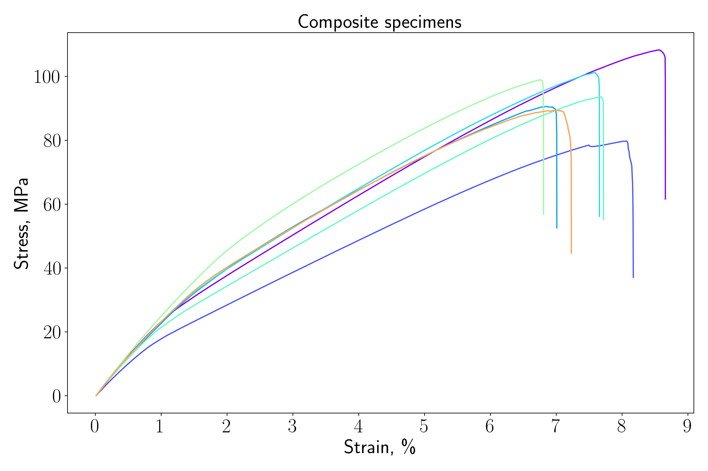
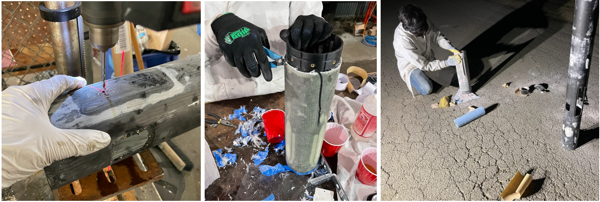
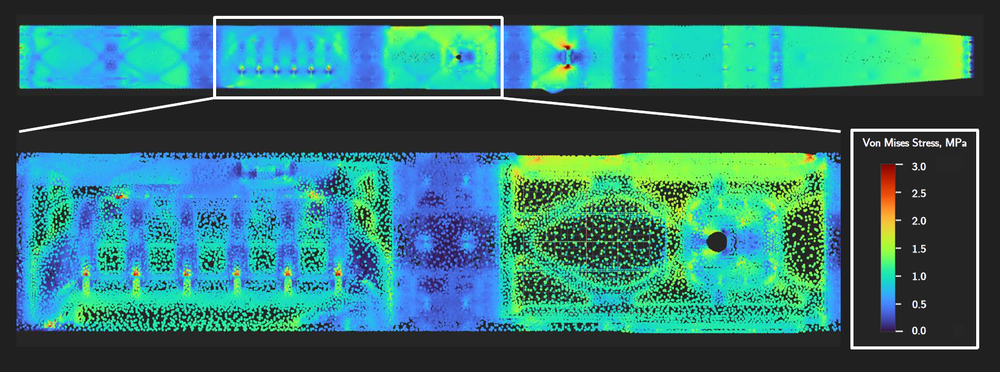
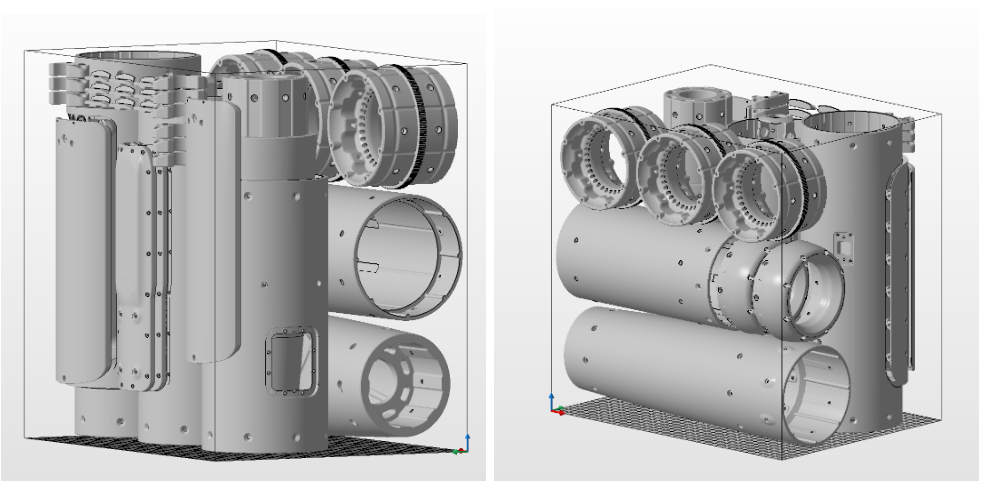
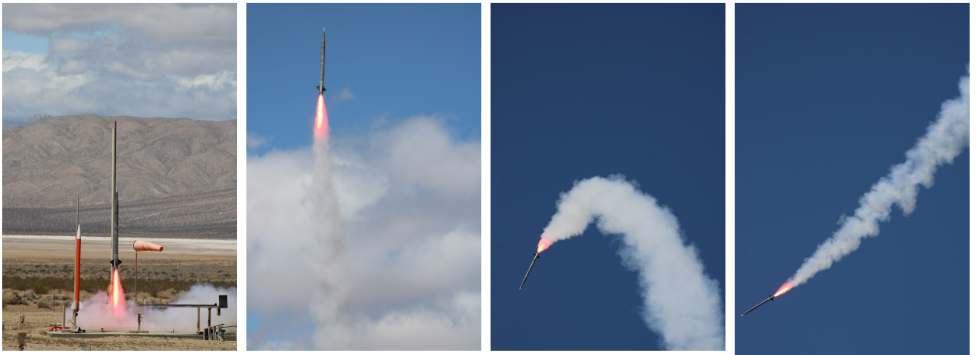
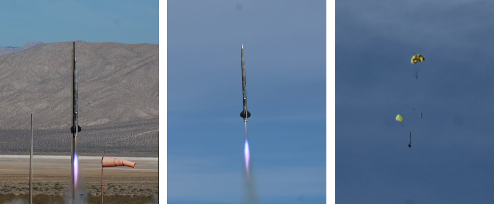

Composites laid-up by hand are the prevailing “gold standard” for airframes used in high-power rocketry, and SEB has made extensive use of them in past projects. Carbon fiber and fiberglass are great materials: incredibly lightweight, stiff, and strong. But they are time-consuming to work with, especially by hand in a garage “shop” setting. Cutting and drilling requires good PPE; sanding and polishing require a great deal of manual labor; and it can be very difficult to repair a structural crack or dent in a damaged composite airframe.
As a demonstration towards the next paradigm of high-power rocket airframe manufacturing, my friend Asa Garner and I have designed, printed, and successfully flown and recovered a supersonic-capable rocket that is 3D-printed. The airframe material is nylon (polyamide, or PA)-12, and all parts - except the aluminum nosecone tip - were made using additive manufacturing. The majority of parts were printed on an HP Jet Fusion 5200 printer, which uses a form of laserless powder-bed fusion called Multi-Jet Fusion (MJF). The sole exception is the set of four fins, printed on a Markforged X7 FDM to take advantage of inlaid continuous carbon-fiber reinforcement. Standing at 2.4 meters tall and 125 millimeters in diameter, this airframe is among the biggest rockets ever fully 3D-printed. This page tells the story of how these next-generation Low Altitude Demonstrator (LAD) vehicles were created, and the (perhaps a bit too) exciting journey there.
The first experimental vehicle we flew was called LAD-5. This airframe wasn’t completely 3D-printed; rather, we first evaluated the option of printing the inner airframe structure in place, laying up carbon-fiber laminate on top of the printed part, and allowing the entire assembly to act as the flight vehicle. This method offers two distinct advantages over the classical mandrel method, which typically consists of laying up over a tube or similar mandrel, then carefully extracting the cured composite from the mandrel (without damage, of course). First, the inner features, such as recovery-bay and avionics-bay mounting points, would exist as part of the 3D-printed part, removing the difficulty associated with adding them on to a thin, smooth carbon-fiber tube. Second, external features like hole-patterns, which often needed to be precise enough to allow adjacent sections to mate, could be directly printed onto the inner structure like a template, and simply located and drilled-out after the composite cured. Both of these advantages meant that development time would be reduced dramatically compared to previous, all-composite LAD vehicles, which required mainly planar or square components and lots of L-brackets. With a printed inner core, we could design more “organic” and free-form geometry with ease.
From a structural perspective, the likeliest failure modality seemed to be delamination between the printed part and the composite, for example caused by adhesive failure at the interface. To investigate this phenomenon, we printed a series of ASTM D638 Type-I “dogbone” samples using PA-12, performed a layup of glass-fiber reinforced polymer (GFRP) on top, and pulled the whole thing in tension until failure. Tensile behavior immediately illustrated that the samples did not delaminate until the ultimate tensile strength of the printed material was reached, at which point the PA-12 entered the plastic regime and further elongation failed to produce an increase in stress-carrying capacity in that phase. After this “knee”, the glass-fiber phase bore the remaining load until ultimate failure (a combination of layer delamination and fiber pull-out). From a design perspective, we anticipated very low strains on the airframe under service loading, well below the yielding strain of the PA-12. However, as a conservative estimate, for design calculations involving thermoplastic-GFRP composite structures (i.e., the LAD-5 airframe), we used the lower stiffness associated with the second linear regime. We repeated this experiment with carbon-fiber reinforced polymer (CFRP) in place of the GFRP. The combined data we collected, in addition to some papers in the existing literature, gave us a good foundation for material selection for this unique structure.
The final design choice was a three-layer laminate structure (CFRP-GFRP-CFRP) on top of a printed PA-12 “substrate” airframe having the requisite internal and external mounting features, hatches, and holes. To design against buckling under the combination of compressive flight loads from thrust and drag, we carried out a first order calculation suggesting that a total of 2mm of composite material was sufficient. We printed the substrate layer over three full builds, taking a total of approximately 36 printing-hours, and performed the three-layer wet layup by hand. From a process perspective, the procedure after printing was extremely similar to that of traditional airframe construction, with the exception that the “mandrel” (i.e. the PA-12 substrate) was now left in place after curing. The only airframe component that was not produced in this manner were the four fins, which were directly printed on a Markforged X7 FDM 3D-printer with inlaid continuous carbon-fiber reinforcement for added stiffness.
Producing the LAD-5 airframe with this “composite” technique allowed a great degree of modularity and reconfigurability, especially on a section-by-section basis. Integration was dramatically simplified compared to a traditional, annular composite airframe through the use of threaded heat-set inserts which could be installed directly in to the thermoplastic PA-12, allowing standard threaded fasteners to be used for coupling sections together and mounting auxiliary components like the standalone avionics bay. However, the production of our composite LAD still saw some hiccups. In particular, through-holes needed to be drilled out after the composite skin cured. Although the of the holes was determined on the printed parts, the small airframe diameter meant that the holes had to be drilled from the outside in, making it a non-trivial challenge to attain an appropriate positioning tolerance on circular hole patterns required for mating parts. Also, the composite layer hand to be sanded and smoothed just as before. Surface imperfections – nicks, pockmarks, and deep scratches – were addressed using the application of body-filling compound, which created additional sanding and polishing steps. And the uniformity issues of ambient-cure composites remained.

Despite the new and existing challenges, we assembled the vehicle, which weighed 14.2kg dry (i.e. without its L-1300 solid motor). In March 2022, we launched LAD-5 to approximately 10,800 feet over the Mojave Desert, its altitude and top speed slightly limited by high transverse winds. The airframe survived the dynamic pressure loading without buckling, validating the design parameters used for the structural component. However, a few seconds after parachute deployment at apogee, the shroud lines of the drogue parachute itself failed via tearing, separating the parachute from the airframe. The airframe did not survive the subsequent ballistic fall and shattered on impact with terrain. Notably, several large sections of the composite remained intact, particularly those reinforced by strong internal structures like the motor casing.
For the next flight-vehicle iteration of the rocket, LAD-7, which had the same basic design parameters, we wanted a turnaround time as fast as possible. With existing manufacturing methods, the composite-overwrap production contributed the greatest time and had the highest degree of variability due to manual factors. Therefore, we conducted an analysis to determine whether it was possible to design an that was capable of withstanding the design loads in compression. The 2.4m-tall, 120mm-diameter structure would consist entirely of PA-12 and be directly printed in three builds, with the remaining integration step dominated by the installation of threaded heat-set inserts and the integration of adjoining airframe sections to form the full stack.
As a basis for the structural analysis, a baseline elastic modulus of 1.7 GPa was taken from the empirical data, given that the airframe thickness would exceed 3.0mm everywhere. We repeated the same first-order buckling calculation to determine a sufficient minimum outer radius, and validated the overall design – this time with no CFRP or GFRP present – using a finite-element model in nTopology. The PA-12 material was modeled isotropically with a uniform stiffness for simplicity, although empirical evidence (with which we are unfortunately very familiar) suggests a degree of anisotropy in real, printed parts, mostly as a function of printing orientation and location. To address this discrepancy, the uniform stiffness used in the simulation (1.7 GPa) corresponded to the minimum value for printing orientation, i.e. the worst-case scenario.
Our simulations suggested that no mesh element exceeded 3 MPa von Mises stress, well under the measured yield stress of PA-12. As expected, stresses were higher around corners of hatches and around holes in the airframe, which act as stress risers compared to the bulk. To further protect against crack propagation, the features with the highest hole density (viz., the interstage couplers between adjoining airframe sections) were thickened to decrease the tendency for crack growth. Not considered in the simulation was the effect of threaded fasteners coupling parts together, which serves to add fixity to the structure. A buckling analysis demonstrated a 1.15 safety factor against first order buckling, which is the lowest-energy solution to the slender beam model. According to the simulation result, the buckling was predicted to propagate from large airframe hatches; these were also thickened for added stiffness.
Like its predecessor, LAD-7 was printed in full over three builds using the Jet Fusion 5200, with fins printed on a Markforged X7. Unlike its predecessor, however, the rocket was essentially ready for integration after unpacking the parts from the powder-bed and the standard bead-blasting to remove unfused powder. Integration consisted of installing threaded heat-set inserts followed by assembly. It almost seemed too good to be true…
Launch day, in mid-April 2022, was an extremely windy day in the Mojave, with gusts of up to 40 mph, increasing as the morning went on. Attempting to fly between wind gusts, we sent the launch command just before noon. LAD-7 ascended nominally for about one second; it then suddenly pitched into the wind, entered a flat spin for one rotation, then fixed its course straight for the desert terrain, where it impacted with a great fireball. The entire flight lasted less than five seconds, and we found the airframe nearby, shattered into a million pieces. Only the aluminum nosecone tip – buried about six inches underground – and the aft airframe section, with the motor casing, survived intact.
Having witnessed the spectacle of a lifetime, but not yet a successful flight, Asa and I set back to work almost immediately for the next iteration of the airframe. First, we made some high-level design changes to improve the stability of the airframe (which, combined with the wind gusts, resulted in the weathercocking effect that caused the airframe to initially pitch into the wind). We also optimized the geometry of some structures to reduce weight and streamline parachute packing and recovery-system testing. All told, this process took about a week, with another 36 total hours of print time before we were once again ready to integrate for final assembly. Because of supply-chain issues, LAD-8 flew on an L-1500 solid motor, which fits in the same reusable 98mm motor casing as the previous L-1300 motor, but has a slightly higher total impulse.
In June 2022, LAD-8 flew a majestic 8,205 feet – straight – above the warm desert terrain, reaching approximately three-fourths the speed of sound, before deploying both parachutes successfully and coasting back down at a cool twenty-one miles per hour, landing safely and with zero broken airframe sections. The vehicle was immediately ready to re-fly, indicating a fully successful recovery and the first successful demonstrator flight of a large-scale, fully 3D-printed airframe. Our immediate next goals are to re-fly the same airframe, thereby demonstrating reusability, and to explore further weight- and structural-optimization possibilities, which might allow for flight in the transonic regime.
